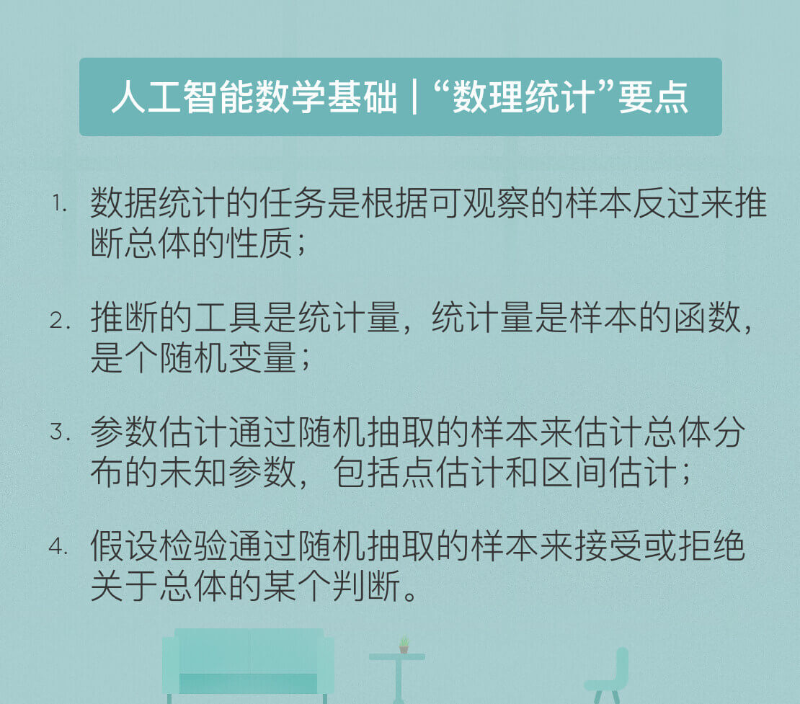

- 00 开篇词 人工智能：新时代的必修课.md.html
- 01 数学基础 九层之台，起于累土：线性代数.md.html
- 02 数学基础 月有阴晴圆缺，此事古难全：概率论.md.html
- 03 数学基础 窥一斑而知全豹：数理统计.md.html
- 04 数学基础 不畏浮云遮望眼：最优化方法.md.html
- 05 数学基础 万物皆数，信息亦然：信息论.md.html
- 06 数学基础 明日黄花迹难寻：形式逻辑.md.html
- 07 机器学习 数山有路，学海无涯：机器学习概论.md.html
- 08 机器学习 简约而不简单：线性回归.md.html
- 09 机器学习 大道至简：朴素贝叶斯方法.md.html
- 10 机器学习 衍化至繁：逻辑回归.md.html
- 11 机器学习 步步为营，有章可循：决策树.md.html
- 12 机器学习 穷则变，变则通：支持向量机.md.html
- 13 机器学习 三个臭皮匠，赛过诸葛亮：集成学习.md.html
- 14 机器学习 物以类聚，人以群分：聚类分析.md.html
- 15 机器学习 好钢用在刀刃上：降维学习.md.html
- 16 人工神经网络 道法自然，久藏玄冥：神经网络的生理学背景.md.html
- 17 人工神经网络 一个青年才俊的意外死亡：神经元与感知器.md.html
- 18 人工神经网络 左手信号，右手误差：多层感知器.md.html
- 19 人工神经网络 各人自扫门前雪：径向基函数神经网络.md.html
- 20 人工神经网络 看不见的手：自组织特征映射.md.html
- 21 人工神经网络 水无至清，人莫至察：模糊神经网络.md.html
- 22 深度学习 空山鸣响，静水流深：深度学习概述.md.html
- 23 深度学习 前方有路，未来可期：深度前馈网络.md.html
- 24 深度学习 小树不修不直溜：深度学习中的正则化.md.html
- 25 深度学习 玉不琢不成器：深度学习中的优化.md.html
- 26 深度学习 空竹里的秘密：自编码器.md.html
- 27 深度学习 困知勉行者勇：深度强化学习.md.html
- 28 深度学习框架下的神经网络 枯木逢春：深度信念网络.md.html
- 29 深度学习框架下的神经网络 见微知著：卷积神经网络.md.html
- 30 深度学习框架下的神经网络 昨日重现：循环神经网络.md.html
- 31 深度学习框架下的神经网络 左右互搏：生成式对抗网络.md.html
- 32 深度学习框架下的神经网络 三重门：长短期记忆网络.md.html
- 33 深度学习之外的人工智能 一图胜千言：概率图模型.md.html
- 34 深度学习之外的人工智能 乌合之众的逆袭：集群智能.md.html
- 35 深度学习之外的人工智能 授人以鱼不如授人以渔：迁移学习.md.html
- 36 深度学习之外的人工智能 滴水藏海：知识图谱.md.html
- 37 应用场景 你是我的眼：计算机视觉.md.html
- 38 应用场景 嘿, Siri：语音处理.md.html
- 39 应用场景 心有灵犀一点通：对话系统.md.html
- 40 应用场景 数字巴别塔：机器翻译.md.html
- 一键到达 人工神经网络复习课.md.html
- 一键到达 应用场景复习课.md.html
- 一键到达 数学基础复习课.md.html
- 一键到达 机器学习复习课.md.html
- 一键到达 深度学习之外的人工智能复习课.md.html
- 一键到达 深度学习复习课.md.html
- 一键到达 深度学习框架下的神经网络复习课.md.html
- 推荐阅读 我与人工智能的故事.md.html
- 新书 《裂变：秒懂人工智能的基础课》.md.html
- 直播回顾 机器学习必备的数学基础.md.html
- 第2季回归 这次我们来聊聊机器学习.md.html
- 结课 溯洄从之，道阻且长.md.html
- 课外谈 “人工智能基础课”之二三闲话.md.html
- （课外辅导）人工神经网络 拓展阅读参考书.md.html
- （课外辅导）数学基础 拓展阅读参考书.md.html
- （课外辅导）机器学习 拓展阅读参考书.md.html
- （课外辅导）深度学习 拓展阅读参考书.md.html
- 捐赠
03 数学基础 窥一斑而知全豹：数理统计
在人工智能的研究中，数理统计同样不可或缺。基础的统计理论有助于对机器学习的算法和数据挖掘的结果做出解释，只有做出合理的解读，数据的价值才能够体现。数理统计（mathematical statistics）根据观察或实验得到的数据来研究随机现象，并对研究对象的客观规律做出合理的估计和判断。
虽然数理统计以概率论为理论基础，但两者之间存在方法上的本质区别。概率论作用的前提是随机变量的分布已知，根据已知的分布来分析随机变量的特征与规律；数理统计的研究对象则是未知分布的随机变量，研究方法是对随机变量进行独立重复的观察，根据得到的观察结果对原始分布做出推断。
用一句不严谨但直观的话讲：数理统计可以看成是逆向的概率论。用买彩票打个比方，概率论解决的是根据已知的摇奖规律判断一注号码中奖的可能性，数理统计解决的则是根据之前多次中奖/不中奖的号码记录以一定的精确性推测摇奖的规律，虽然这种尝试往往无功而返。
在数理统计中，可用的资源是有限的数据集合，这个有限数据集被称为样本（sample）。相应地，观察对象所有的可能取值被称为总体（population）。数理统计的任务就是根据样本推断总体的数字特征。样本通常由对总体进行多次独立的重复观测而得到，这保证了不同的样本值之间相互独立，并且都与总体具有相同的分布。
在统计推断中，应用的往往不是样本本身，而是被称为统计量的样本的函数。统计量本身是一个随机变量，是用来进行统计推断的工具。样本均值和样本方差是两个最重要的统计量：
- 样本均值：\({\\bar X} = \\dfrac{1}{n} \\sum\\limits_{i = 1}^{n} X_i\)
- 样本方差：\(S ^ 2 = \\dfrac{1}{n - 1} \\sum\\limits_{i = 1}^{n} (X_i - {\\bar X}) ^ 2\)
统计推断的基本问题可以分为两大类：参数估计（estimation theory）和假设检验（hypothesis test）。
参数估计
参数估计是通过随机抽取的样本来估计总体分布的方法，又可以进一步划分为点估计（point estimation）和区间估计（interval estimation）。在已知总体分布函数形式，但未知其一个或者多个参数时，借助于总体的一个样本来估计未知参数的取值就是参数的点估计。点估计的核心在于构造合适的统计量\(\\hat \\theta\)，并用这个统计量的观察值作为未知参数\(\\theta\)的近似值。点估计的具体方法包括矩估计法（method of moments）和最大似然估计法（maximum likelihood estimation）。
矩表示的是随机变量的分布特征，\(k\)阶矩的定义为随机变量的\(k\)次方的均值，即\(E(X^k)\)。矩估计法的思想在于用样本的\(k\)阶矩估计总体的\(k\)阶矩，其理论依据在于样本矩的函数几乎处处收敛于总体矩的相应函数，这意味着当样本的容量足够大时，几乎每次都可以根据样本参数得到相应总体参数的近似值。
相对于基于大数定律的矩估计法，最大似然估计法源于频率学派看待概率的方式。对最大似然估计的直观理解是：既然抽样得到的是已有的样本值，就可以认为取到这一组样本值的概率较大，因而在估计参数\(\\theta\)的时候就需要让已有样本值出现的可能性最大。
在最大似然估计中，似然函数被定义为样本观测值出现的概率，确定未知参数的准则是让似然函数的取值最大化，也就是微积分中求解函数最大值的问题。由于不同的样本值之间相互独立，因而似然函数可以写成若干概率质量函数/概率密度函数相乘的形式，并进一步转化为对数方程求解。
矩估计法和最大似然估计法代表了两种推断总体参数的思路，但对于同一个参数，用不同的估计方法求出的估计量很可能存在差异，这就引出了如何对估计量进行评价的问题。在实际应用中，估计量的评价通常要考虑以下三个基本标准。
- 无偏性：估计量的数学期望等于未知参数的真实值；
- 有效性：无偏估计量的方差尽可能小；
- 一致性：当样本容量趋近于无穷时，估计量依概率收敛于未知参数的真实值。
以上三个要求构成了对点估计量的整体判定标准。无偏性意味着给定样本值时，根据估计量得到的估计值可能比真实值更大，也可能更小。但如果保持估计量的构造不变，而是进行多次重新抽样，每次都用新的样本计算估计值，那么这些估计值与未知参数真实值的偏差在平均意义上等于0，这意味着不存在系统误差。
虽然估计值与真实值之间的偏差不可避免，但个体意义上的偏差越小意味着估计的性能越精确，有效性度量的正是估计量和真实值之间的偏离程度。而偏离程度不仅仅取决于估计量的构造方式，还取决于样本容量的大小，一致性考虑的就是样本容量的影响。一致性表示的是随着样本容量的增大，估计量的值将稳定在未知参数的真实值上。不具备一致性的估计量永远无法将未知参数估计得足够精确，因而是不可取的。
对估计量的判别标准涉及了估计误差的影响，这是和估计值同样重要的参量。在估计未知参数\(\\theta\)的过程中，除了求出估计量，还需要估计出一个区间，并且确定这个区间包含\(\\theta\)真实值的可信程度。在数理统计中，这个区间被称为置信区间（confidence interval），这种估计方式则被称为区间估计。
置信区间可以用如下的方式直观解释：对总体反复抽样多次，每次得到容量相同的样本，则根据每一组样本值都可以确定出一个置信区间\((\\underline{\\theta},\\overline{\\theta})\)，其上界和下界是样本的两个统计量，分别代表了置信上限和置信下限。
每个置信区间都存在两种可能性：包含\(\\theta\)的真实值或不包含\(\\theta\)的真实值。如果对所有置信区间中包含\(\\theta\)真实值的比率进行统计，得到的比值就是置信水平。因此，区间估计相当于在点估计的基础上进一步提供了取值范围和误差界限，分别对应着置信区间和置信水平。
假设检验
参数估计的对象是总体的某个参数，假设检验的对象则是关于总体的某个论断，即关于总体的假设。假设检验中的假设包含原假设\(H_0\)和备择假设\(H_1\)；检验的过程就是根据样本在\(H_0\)和\(H_1\)之间选择一个接受的过程。
理想的情况是假设\(H_0\)(\(H_1\))为真并且这个假设被接受。但由于检验是基于样本做出的，错误的决策终归会出现，其形式可以分为两种：第I类错误对应假设\(H_0\)为真但是被拒绝的情况，也就是“弃真”类型的错误；第II类错误对应假设\(H_0\)不真但是被接受的情况，也就是“取伪”类型的错误。
假设检验的思维方式建立在全称命题只能被证伪不能被证实的基础上。要证明原假设\(H_0\)为真，更容易的方法是证明备择假设\(H_1\)为假，因为只要能够举出一个反例就够了。但在假设检验中，反例并非绝对意义上对假设的违背，而是以小概率事件的形式出现。
在数理统计中，发生概率小于1%的事件被称作小概率事件，在单次实验中被认为是不可能发生的。如果在一次观测得到的样本中出现了小概率事件，那么就有理由认为这不是真正意义上的小概率事件，原始的假设也就此被推翻。如果是备择假设被推翻，就意味着接受原假设；反之，如果是原假设被推翻，则意味着拒绝原假设。
从数理统计的角度看，监督学习算法的任务就是在假设空间中搜索能够针对特定问题做出良好预测的假设。学习器通过对测试数据集的学习得到具有普适性的模型，这个模型适用于不属于测试集的新样本的能力被称为泛化能力。显然，泛化能力越强，学习器就越好。
假设检验的作用就在于根据学习器在测试集上的性能推断其泛化能力的强弱，并确定所得结论的精确程度，可以进一步推广为比较不同学习器的性能。由于度量学习器性能的常用指标是错误率，假设检验中的假设就是对学习器的泛化错误率的推断，推断的依据就是在测试数据集上的测试错误率。具体的检验方式有很多种，在此不做赘述。
除了推断之外，对泛化性能的解释也是机器学习算法分析的重要内容。泛化误差的构成可以分为三部分：偏差（bias）、方差（variance）和噪声（noise）。
偏差表示算法预测值和真实结果之间的偏离程度，刻画的是模型的欠拟合特性；方差表示数据的扰动对预测性能的影响，刻画的是模型的过拟合特性；噪声表示在当前学习任务上能够达到的最小泛化误差，刻画的是任务本身的难度。对任何实际的模型来说，偏差和方差都难以实现同时优化，反映出欠拟合与过拟合之间难以调和的矛盾。
今天我和你分享了人工智能必备的数理统计基础，着重于抽象概念的解释而非具体的数学公式，其要点如下：
- 数理统计的任务是根据可观察的样本反过来推断总体的性质；
- 推断的工具是统计量，统计量是样本的函数，是个随机变量；
- 参数估计通过随机抽取的样本来估计总体分布的未知参数，包括点估计和区间估计；
- 假设检验通过随机抽取的样本来接受或拒绝关于总体的某个判断，常用于估计机器学习模型的泛化错误率。
既然机器学习和数理统计关注的都是利用数据提取信息或者规律，机器学习中的很多算法也依赖于数理统计作为基础，那么如何看待两者之间的区别和联系呢？
欢迎发表你的观点。

© 2019 - 2023 Liangliang Lee. Powered by gin and hexo-theme-book.